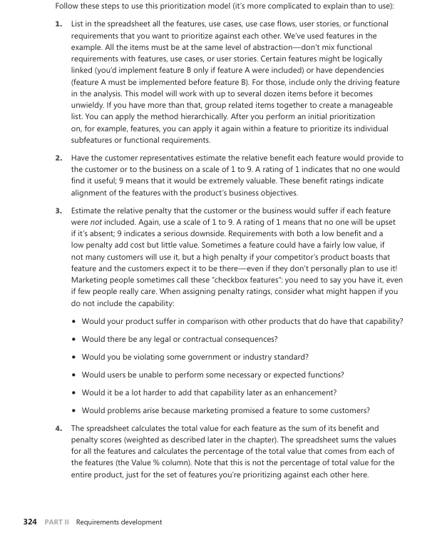

First Things First
Introdução
O First Things First (FTF) é uma técnica de priorização de requisitos que visa equilibrar, definir, alinhar e estabelecer as tarefas que devem ser feitas, dividindo-as entre mais e menos importantes. A abordagem busca avaliar o valor agregado de cada requisito, sua penalidade em caso de ausência, bem como os custos e riscos de implementação, considerando a complexidade técnica e as incertezas do projeto.
Tabela de atividades por membro
Tabela 1 Tabela de atividades dos membros
| Nome | Atividade entregue |
|---|---|
| Jose Eduardo | Criação da tabela 02 e 03 Participação no vídeo com usuário |
| Diassis | Criação do documento 1.0 e 2.0 Criação da tabela 02 e 03 Participação no vídeo com usuário. |
| Thales Germano | Revisor 1.0, 2.0 e 2.1 |
| Marco Marques | Revisor 2.2. |
Fonte: Jose Eduardo, 2025.
Metodologia
A priorização seguiu uma sequência estruturada de etapas para garantir uma análise objetiva e equilibrada dos requisitos:
-
Todos os requisitos funcionais e não funcionais foram listados em uma planilha.
-
Em seguida, o usuário avaliou cada requisito, dando uma nota para os seguintes critérios:
-
Benefício: grau de valor agregado ao sistema, variando de 1 (baixo) a 9 (alto).
-
Penalidade: impacto negativo da ausência do requisito, também de 1 a 9.
-
Com essas notas, foi calculado um valor total para cada requisito, de acordo com a seguinte equação:
valor total = (benefício × peso) + (penalidade × peso)
-
A equipe de desenvolvimento atribuiu notas de 1 a 9 para os seguintes aspectos:
-
Custo: nível de esforço necessário para implementação, considerando complexidade, integrações e testes.
-
Risco: probabilidade de desafios técnicos, falta de conhecimento, ou inviabilidade no prazo.
-
Após isso, todos os valores foram transformados em percentuais, e a prioridade final de cada requisito foi calculada com a fórmula abaixo:
prioridade = valor(%) / (custo(%) × peso do custo + risco(%) × peso do risco)
- Por fim, os requisitos foram organizados por ordem decrescente de prioridade, o que ajudou a destacar aqueles com maior retorno e menor esforço técnico envolvido.
First Things First
Descrição dos Requisitos
Tabela 2 Descrição dos Requisitos coletados.
| ID | Descrição |
|---|---|
| RF01 | Acesso simultâneo a múltiplos CPFs/CNPJs |
| RF02 | Cadastro de CPF via app (totalmente remoto) |
| RF03 | Acompanhamento de status da restituição (precisão quanto aos lotes) |
| RF04 | Notificação de vencimento próximo |
| RF05 | Agendar no próprio aplicativo atendimentos presenciais em unidades da Receita Federal |
| RF06 | Acesso offline a serviços essenciais do app (históricos de contribuições, DARFs) |
| RF07 | Alteração de dados via app |
| RF08 | Funcionalidade de histórico e acompanhamento de restituições de anos anteriores |
| RF09 | Declaração simplificada do IR |
| RF10 | Geração de guias de pagamento |
| RF11 | Consultar o status do CPF (ativo ou não) |
| RF12 | Integração com conta Gov.br |
| RF13 | Envio de documentos para instrução de processos |
| RF14 | Acessar informações detalhadas a cerca da declaração de imposto de renda de um ano específico |
| RF15 | Declaração do Imposto de Renda diretamente pelo app |
| RF16 | O aplicativo deve mostrar um histórico de envio das declarações entregues pelo usuário |
| RF17 | Emissão de certidão negativa via aplicativo |
| RF18 | Consultar pendências de Malha |
| RF19 | Dashboard para profissionais contábeis de múltiplos CPFs/CNPJs |
| RF20 | Acompanhar processos no próprio aplicativo |
| RF21 | Integração com o App Esocial dentro do próprio |
| RF22 | Permitir via App autorização de acesso à terceiros |
| RF23 | Compartilhamento de comprovantes e certidões por WhatsApp, e-mail ou Drive |
| RF24 | Reenvio de notificações perdidas via e-mail ou mensagem no app |
| RF25 | Comparativo automático entre declarações de anos anteriores |
| RF26 | FAQ interativo com busca inteligente (filtrado por tema: CPF, IRPF, Certidões etc.) |
| RF27 | Integração com calendário do dispositivo para lembretes de obrigações fiscais |
| RF28 | Consulta de inscrição no CNPJ |
| RF29 | Consulta de tabelas CNAE, NCM e unidades da Receita Federal |
| RF30 | Acesso à Caixa Postal para mensagens oficiais da Receita Federal |
| RF31 | Visualização de notícias e vídeos institucionais da Receita Federal |
| RF32 | Consultar débitos pendentes (DARFs) |
| RF33 | Pagamento do DARF com cartão de crédito |
| RF34 | Emitir comprovante de CPF em PDF |
| RNF1 | Acessibilidade (chatbot, imagens, vídeos) — melhorias no chatbot |
| RNF2 | Conteúdo educativo para iniciantes |
| RNF3 | Testes de desempenho para suportar alta demanda de usuários simultâneos |
| RNF4 | Proteção de dados pessoais conforme a LGPD |
| RNF5 | Interface responsiva e acessível |
| RNF6 | Interface com a possibilidade de uso do modo escuro |
| RNF7 | Testes de segurança para garantir a integridade dos dados e autenticação segura |
| RNF8 | Compatível com Android 8+ e iOS 14+ |
| RNF9 | Testes de usabilidade semestrais com público 60+ |
| RNF10 | O aplicativo deve ter tempo de resposta inferior a 3 segundos para ações comuns |
| RNF11 | O aplicativo deve funcionar em smartphones com telas de 4.5" a 7" sem perda de usabilidade |
| RNF12 | Linguagem da interface deve seguir padrão A2 do CEFR, evitando jargões técnicos |
| RNF13 | O app deve suportar modo de operação em baixa conectividade, com cache de dados essenciais |
| RNF14 | Atualizações do app não devem causar perda de dados armazenados localmente |
| RNF15 | Tempo de inatividade programada máximo de 2h por mês, com aviso prévio |
| RNF16 | Tempo de carregamento inicial do app não deve ultrapassar 5 segundos em conexão móvel |
| RNF17 | Suporte a leitores de tela (TalkBack, VoiceOver) em todas as funcionalidades |
| RNF18 | Armazenamento anônimo de logs de erro respeitando a LGPD |
| RNF19 | Versão mínima em HTML5 responsiva para acesso via navegador em caso de falha do app |
| RNF20 | Clareza na apresentação de dados fiscais |
| RNF21 | Integração confiável com serviços externos (Gov.br, instituições financeiras) |
Fonte: Jose Eduardo e Diassis, 2025.
Resultados da Priorização FTF
Tabela 3 Resultados da Priorização utilizando First Things First (FTF)
| Funcionalidade | Benefício Relativo | Penalidade Relativa | Valor Total | Valor (%) | Custo Relativo | Custo (%) | Risco Relativo | Risco (%) | Prioridade |
|---|---|---|---|---|---|---|---|---|---|
| RNF12 - Linguagem da interface deve seguir padrão A2 do CEFR, evitando jargões técnicos | 7 | 2 | 9 | 1.39752 | 1 | 0.392157 | 1 | 0.401606 | 3.52124 |
| RF26 - FAQ interativo com busca inteligente (filtrado por tema: CPF, IRPF, Certidões etc.) | 9 | 7 | 16 | 2.48447 | 3 | 1.17647 | 1 | 0.401606 | 3.14873 |
| RF04 - Notificação de vencimento próximo | 5 | 7 | 12 | 1.86335 | 2 | 0.784314 | 1 | 0.401606 | 3.14246 |
| RF09 - Declaração simplificada do IR | 6 | 9 | 15 | 2.32919 | 2 | 0.784314 | 2 | 0.803213 | 2.93437 |
| RF24 - Reenvio de notificações perdidas via e-mail ou mensagem no app | 7 | 6 | 13 | 2.01863 | 2 | 0.784314 | 2 | 0.803213 | 2.54312 |
| RNF2 - Conteúdo educativo para iniciantes | 8 | 5 | 13 | 2.01863 | 2 | 0.784314 | 2 | 0.803213 | 2.54312 |
| RF23 - Compartilhamento de comprovantes e certidões por WhatsApp, e-mail ou Drive | 8 | 4 | 12 | 1.86335 | 3 | 1.17647 | 2 | 0.803213 | 1.88248 |
| RF34 - Emitir comprovante de CPF em PDF | 7 | 3 | 10 | 1.5528 | 3 | 1.17647 | 2 | 0.803213 | 1.56873 |
| RF08 - Funcionalidade de histórico e acompanhamento de restituições de anos anteriores | 4 | 6 | 10 | 1.5528 | 3 | 1.17647 | 2 | 0.803213 | 1.56873 |
| RF17 - Emissão de certidão negativa via aplicativo | 3 | 5 | 8 | 1.24224 | 2 | 0.784314 | 2 | 0.803213 | 1.565 |
| RF31 - Visualização de notícias e vídeos institucionais da Receita Federal | 1 | 3 | 4 | 0.621118 | 1 | 0.392157 | 1 | 0.401606 | 1.565 |
| RF06 - Acesso offline a serviços essenciais do app (históricos de contribuições, DARFs) | 6 | 7 | 13 | 2.01863 | 4 | 1.56863 | 3 | 1.20482 | 1.45569 |
| RNF5 - Interface responsiva e acessível | 8 | 5 | 13 | 2.01863 | 4 | 1.56863 | 3 | 1.20482 | 1.45569 |
| RF20 - Acompanhar processos no próprio aplicativo | 9 | 4 | 13 | 2.01863 | 4 | 1.56863 | 3 | 1.20482 | 1.45569 |
| RF15 - Declaração do Imposto de Renda diretamente pelo app | 9 | 4 | 13 | 2.01863 | 3 | 1.17647 | 4 | 1.60643 | 1.45074 |
| RNF4 - Proteção de dados pessoais conforme a LGPD | 9 | 9 | 18 | 2.79503 | 4 | 1.56863 | 6 | 2.40964 | 1.40515 |
| RF11 - Consultar o status do CPF (ativo ou não) | 7 | 9 | 16 | 2.48447 | 5 | 1.96078 | 4 | 1.60643 | 1.39295 |
| RF29 - Consulta de tabelas CNAE, NCM e unidades da Receita Federal | 8 | 6 | 14 | 2.17391 | 3 | 1.17647 | 5 | 2.00803 | 1.36531 |
| RNF14 - Atualizações do app não devem causar perda de dados armazenados localmente | 9 | 8 | 17 | 2.63975 | 6 | 2.35294 | 4 | 1.60643 | 1.33342 |
| RF25 - Comparativo automático entre declarações de anos anteriores | 8 | 5 | 13 | 2.01863 | 4 | 1.56863 | 4 | 1.60643 | 1.27156 |
| RNF18 - Armazenamento anônimo de logs de erro respeitando a LGPD | 9 | 7 | 16 | 2.48447 | 4 | 1.56863 | 6 | 2.40964 | 1.24902 |
| RNF6 - Interface com a possibilidade de uso do modo escuro | 9 | 2 | 11 | 1.70807 | 4 | 1.56863 | 3 | 1.20482 | 1.23173 |
| RF14 - Acessar informações detalhadas a cerca da declaração de imposto de renda de um ano especifico | 9 | 2 | 11 | 1.70807 | 3 | 1.17647 | 4 | 1.60643 | 1.22755 |
| RF32 - Consultar débitos pendentes (DARFs) | 8 | 6 | 14 | 2.17391 | 4 | 1.56863 | 5 | 2.00803 | 1.21561 |
| RF16 - O aplicativo deve mostrar um histórico de envio das declarações entregues pelo usuário. | 6 | 3 | 9 | 1.39752 | 3 | 1.17647 | 3 | 1.20482 | 1.17375 |
| RNF20 - Clareza na apresentação de dados fiscais | 9 | 7 | 16 | 2.48447 | 6 | 2.35294 | 5 | 2.00803 | 1.13941 |
| RNF13 - O app deve suportar modo de operação em baixa conectividade, com cache de dados essenciais | 8 | 5 | 13 | 2.01863 | 4 | 1.56863 | 5 | 2.00803 | 1.12878 |
| RF10 - Geração de guias de pagamento | 5 | 5 | 10 | 1.5528 | 3 | 1.17647 | 4 | 1.60643 | 1.11596 |
| RF05 - Agendar no próprio aplicativo atendimentos presenciais em unidades da Receita Federal | 7 | 4 | 11 | 1.70807 | 5 | 1.96078 | 3 | 1.20482 | 1.07915 |
| RNF8 - Compatível com Android 8+ e iOS 14+ | 7 | 3 | 10 | 1.5528 | 4 | 1.56863 | 4 | 1.60643 | 0.978122 |
| RF33 - Pagamento do DARF com cartão de crédito | 7 | 8 | 15 | 2.32919 | 6 | 2.35294 | 6 | 2.40964 | 0.978122 |
| RF01 - Acesso simultâneo a múltiplos CPFs/CNPJs | 8 | 7 | 15 | 2.32919 | 6 | 2.35294 | 6 | 2.40964 | 0.978122 |
| RNF7 - Testes de segurança para garantir a integridade dos dados e autenticação segura | 8 | 7 | 15 | 2.32919 | 5 | 1.96078 | 7 | 2.81124 | 0.976185 |
| RNF17 - Suporte a leitores de tela (TalkBack, VoiceOver) em todas as funcionalidades | 9 | 3 | 12 | 1.86335 | 5 | 1.96078 | 6 | 2.40964 | 0.852711 |
| RNF3 - Testes de desempenho para suportar alta demanda de usuários simultâneos | 9 | 8 | 17 | 2.63975 | 9 | 3.52941 | 7 | 2.81124 | 0.832643 |
| RF07 - Alteração de dados via app | 9 | 8 | 17 | 2.63975 | 8 | 3.13725 | 8 | 3.21285 | 0.831404 |
| RF12 - Integração com conta Gov.br | 9 | 9 | 18 | 2.79503 | 8 | 3.13725 | 9 | 3.61446 | 0.827947 |
| RNF9 - Testes de usabilidade semestrais com público 60+ | 4 | 7 | 11 | 1.70807 | 8 | 3.13725 | 3 | 1.20482 | 0.786755 |
| RNF1 - Acessibilidade (chatbot, imagens, vídeos) — melhorias no chatbot | 4 | 2 | 6 | 0.931677 | 4 | 1.56863 | 2 | 0.803213 | 0.785615 |
| RNF11 - O aplicativo deve funcionar em smartphones com telas de 4.5" a 7" sem perda de usabilidade | 3 | 4 | 7 | 1.08696 | 4 | 1.56863 | 3 | 1.20482 | 0.783831 |
| RNF21 - Integração confiável com serviços externos (Gov.br, instituições financeiras) | 9 | 9 | 18 | 2.79503 | 9 | 3.52941 | 9 | 3.61446 | 0.782498 |
| RF13 - Envio de documentos para instrução de processos | 7 | 8 | 15 | 2.32919 | 7 | 2.7451 | 8 | 3.21285 | 0.781877 |
| RF28 - Consulta de inscrição no CNPJ | 3 | 4 | 7 | 1.08696 | 3 | 1.17647 | 4 | 1.60643 | 0.781169 |
| RF18 - Consultar pendências de Malha | 5 | 6 | 11 | 1.70807 | 6 | 2.35294 | 6 | 2.40964 | 0.71729 |
| RF27 - Integração com calendário do dispositivo para lembretes de obrigações fiscais | 4 | 7 | 11 | 1.70807 | 6 | 2.35294 | 7 | 2.81124 | 0.661508 |
| RF19 - Dashboard para profissionais contábeis de múltiplos CPFs/CNPJs | 8 | 5 | 13 | 2.01863 | 8 | 3.13725 | 8 | 3.21285 | 0.635779 |
| RNF19 - Versão mínima em HTML5 responsiva para acesso via navegador em caso de falha do app | 6 | 4 | 10 | 1.5528 | 7 | 2.7451 | 6 | 2.40964 | 0.602473 |
| RF02 - Cadastro de CPF via app (totalmente remoto) | 8 | 5 | 13 | 2.01863 | 9 | 3.52941 | 8 | 3.21285 | 0.5988 |
| RF30 - Acesso à Caixa Postal para mensagens oficiais da Receita Federal | 2 | 4 | 6 | 0.931677 | 4 | 1.56863 | 4 | 1.60643 | 0.586873 |
| RF03 - Acompanhamento de status da restituição (precisão quanto aos lotes) | 6 | 4 | 10 | 1.5528 | 7 | 2.7451 | 8 | 3.21285 | 0.521251 |
| RNF15 - Tempo de inatividade programada máximo de 2h por mês, com aviso prévo | 1 | 3 | 4 | 0.621118 | 2 | 0.784314 | 5 | 2.00803 | 0.444872 |
| RF22 - Permitir via App autorização de acesso à terceiros | 5 | 2 | 7 | 1.08696 | 6 | 2.35294 | 7 | 2.81124 | 0.420959 |
| RF21 - Integração com o App Esocial dentro do próprio | 4 | 3 | 7 | 1.08696 | 6 | 2.35294 | 7 | 2.81124 | 0.420959 |
| RNF10 - O aplicativo deve ter tempo de resposta inferior a 3 segundos para ações comuns | 1 | 3 | 4 | 0.621118 | 7 | 2.7451 | 4 | 1.60643 | 0.285472 |
| RNF16 - Tempo de carregamento inicial do app não deve ultrapassar 5 segundos em conexão móvel | 1 | 1 | 2 | 0.310559 | 4 | 1.56863 | 5 | 2.00803 | 0.173659 |
| Total | 1288 | 100 | 510.0 | 100 | 498.0 | 100 |
Fonte: Jose Eduardo e Diassis, 2025.
Video da execução da técnica de priorização
Tabela 4 - Video priorização FTF
| Participantes | Função | Data da realização da técnica |
|---|---|---|
| Diassis | Condutor da entrevista e avaliador técnico do custo e risco | 01/07/2025 |
| Jose Eduardo | Observador na entrevista e avaliador técnico do custo e risco | 01/07/2025 |
| Fernando dos Santos | Usuário | 01/07/2025 |
Fonte: Jose Eduardo, 2025.
Referências
WIEGERS, Karl E.; BEATTY, Joy. Software Requirements. 3. ed. Microsoft Press, 2013. cap. 16, p. 313–329. 
5. Histórico de versões
| Versão | Data | Descrição | Autor(es) | Revisor(es) |
|---|---|---|---|---|
1.0 |
03/05/2025 | Primeira Versão do FTF | Diassis e Marco | José Eduardo |
1.1 |
03/05/2025 | Correção no texto | Diassis e Marco | José Eduardo |
1.2 |
11/05/2025 | Correção de texto | Diassis e Marco | José Eduardo |
2.0 |
02/07/2025 | Correção dos requisitos, e implementação do FTF com usuário, e sua respectiva validação. Imagem de referência adicionada. | Diassis e José Eduardo | Thales Germano |
2.1 |
02/07/2025 | Padronizando o histórico de versões igual ao dos outros artefatos anteriores | José Eduardo | Thales Germano |
2.2 |
05/07/2025 | Adicionando o vídeo da técnica | José Eduardo | Marco Marques |